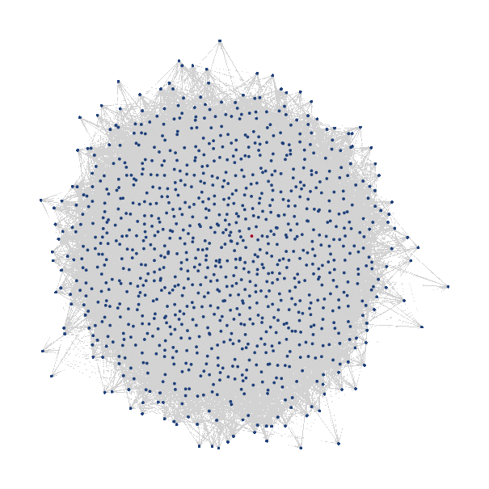

Modelling agents with a genetic structure
In this example, we show how to model a population which evolve on a linear geographic space, and is defined by a genotype graph. Any two connected node in the genotype graph should be thought of as two neighbour genomes, i.e that are very similar in their alleles / nucleotide.
The genotype space is inspired from the article The architecture of an empirical genotype-phenotype map
Defining the space
##### Genotype space#####
dim_neutr = 1000
magicprop = 523728 / 32896
g = SimpleGraph{Int16}(dim_neutr,round(Int16,dim_neutr * magicprop))
initnode = argmax(eigenvector_centrality(g)) # This is the central node the we will use to instantiate the populations
myspace = (DiscreteSegment(Int8(1),Int8(nodes)),GraphSpace(g)) # union of vector spacesDefining birth, death processes and mutation
K0 = 1000
mu = [1.,1.]
b(X,t) = 1 / nodes
d(X,Y,t) = (X[1] ≈ Y[1]) / K0
D = (5e-1,1.4825)Final set up
NMax = 2000
# tend = 1.5
tend = 3000
p_default = Dict{String,Any}();@pack! p_default = d,b,NMax,mu
myagents = [Agent(myspace,(rand(Int8(1):Int8(nodes)),initnode),ancestors=true,rates=true) for i in 1:round(K0/nodes)]
w0 = World(myagents,myspace,p_default,0.)Plotting
Plotting animations of graphs is a bit involved. If you want to learn about that, consult src/examples/genetic_structure.jl.
Geographical space

Genetic space
